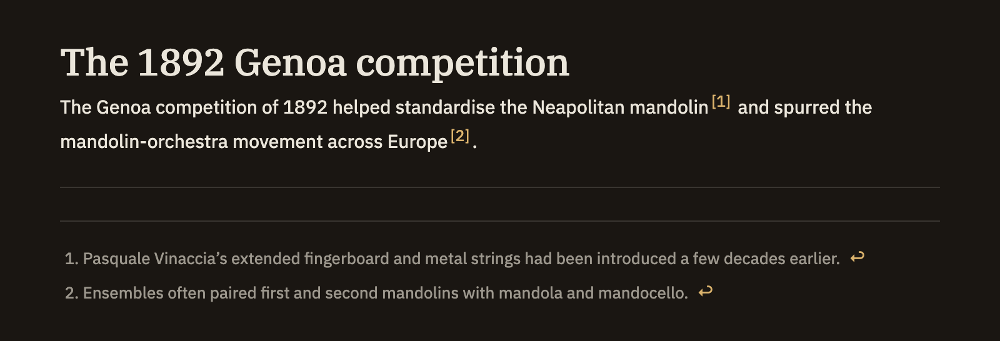

Footnotes
Footnotes let you move an aside, a caveat, or a citation out of the sentence and down to the bottom of the note. You mark the spot in your text and write the note itself elsewhere in the file, and Minerva keeps the two linked wherever you're reading.
Writing a footnote
A footnote has two parts: a marker that sits inline where the thought occurs, and the note text that supplies its content.
[^label][^1]) or a word ([^caveat]) — anything without spaces.[^label]: text…Need more than a sentence? Continue a footnote across several paragraphs by indenting the lines that follow. Here's a complete example:
The results replicate the 2019 study,[^rep] though with a smaller
effect size.[^size]
[^rep]: Only the primary outcome was replicated; the secondary
measures did not reach significance.
[^size]: d = 0.31 vs. the original d = 0.62.How footnotes look
When your note is rendered, each marker turns into a small numbered superscript, and all the footnote text gathers into a tidy section at the bottom. Click a number to glide down to the matching footnote; each one ends with a small arrow that takes you back to where you were reading. Prefer not to leave your place? Hover a number and the footnote appears in a tooltip right there.

Your label is just a name for you — it isn't what readers see. Footnotes are numbered automatically in the order their markers appear, so [^caveat] shows up as ¹ if it's the first one. Use whatever labels help you keep track; the finished note stays neat.
Jumping between marker and note
While you're writing, markers and their notes act as two-way links:
- Click a marker — jump to its footnote text.
- Click a footnote's text — jump to the first place it's used.
- Hover a marker — preview the footnote without leaving the sentence. If you haven't written it yet, the preview tells you so.
To add one quickly, use the Insert Footnote command: it drops the next free numbered marker where your cursor is, adds a matching line at the end of the note, and puts your cursor there so you can start typing.
The Footnotes panel
The right sidebar's Footnotes panel lists every footnote in the note, with a preview of each and a search box for long documents. Click an entry to jump to where it's used. The panel also catches loose ends:
- Defined, never used — a footnote you wrote but never pointed to.
- Referenced, not defined — a marker in your text with no footnote written yet. Click it to go straight to the spot and fill it in.